Hướng dẫn cách hạch toán ghi sổ nghiệp vụ mua sắm TSCĐ trên phầm mềm Misa
Khi phát sinh nghiệp vụ mua mới TSCĐ, thông thường có các hoạt động sau:
- Căn cứ vào kế hoạch mua sắm tài sản, nhu cầu sử dụng tài sản, bộ phận có nhu cầu lập yêu cầu mua sắm tài sản.
- Bộ phận quản lý tài sản (tại đơn vị lớn thường thành lập thành 1 phòng riêng, đối với các đơn vị nhỏ thường là bộ phận hành chính hoặc phòng tổng hợp) kiểm tra sự phù hợp của yêu cầu mua sắm tài sản chuyển Giám đốc phê duyệt.
- Giám đốc ra quyết định mua sắm tài sản chuyển bộ phận phụ trách mua sắm tài sản.
- Bộ phận mua sắm tài sản chuẩn bị hồ sơ mua sắm tài sản bao gồm các công việc sau: Xem xét các báo giá (ít nhất là 3 bảng báo giá của 3 nhà cung cấp khác nhau), tổ chức đấu thầu (nếu cần thiết), sau khi xem xét xong sẽ chọn nhà cung cấp phù hợp.
- Bộ phận mua sắm tài sản chuyển bộ hồ sơ mua sắm tài sản trên và kết quả lựa chọn nhà cung cấp chuyển Giám đốc phê duyệt.
- Căn cứ vào phê duyệt của Giám đốc, Bộ phận mua sắm tài sản thực hiện mua sắm tài sản: Ký hợp đồng mua sắm tài sản, nhận tài sản, hóa đơn mua sắm tài sản, biên bản thanh lý hợp đồng và các tài liệu có liên quan khác và thông báo cho bộ phận có liên quan.
- Bộ phận quản lý tài sản và bộ phận mua sắm tài sản nhận tài sản và bàn giao tài sản cho bộ phận sử dụng.
- Căn cứ vào bộ hồ sơ tài sản, bộ phận kế toán sẽ ghi nhận tài sản vào thẻ tài sản cố định và sổ theo dõi tài sản cố định theo các bước công việc sau:
- Khai báo TSCĐ: gắn mã số cho tài sản, khai báo thông tin về tên, số lượng, chủng loại, đặc tính kỹ thuật và các thông tin khác.
- Xác định và ghi nhận nguyên giá Tài sản cố định dựa trên bộ hồ sơ mua sắm Tài sản cố định.
- Khai báo bộ phận sử dụng, ngày sử dụng, thời gian tính khấu hao và các thông tin về phân bổ khấu hao cho các bộ phận sử dụng.
1. Cách định khoản hạch toán khi mua tài sản cố định
- Nợ TK 211 - Tài sản cố định hữu hình
- Nợ TK 212 - Tài sản cố định thuê tài chính (theo Thông Tư 200)
- Nợ TK 2112 - Tài sản cố định thuê tài chính (theo Thông Tư 133)
- Nợ TK 213 - Tài sản cố định vô hình (theo Thông Tư 200)
- Nợ TK 2113 - Tài sản cố định vô hình (theo Thông Tư 133)
- Nợ TK 217 - Bất động sản đầu tư
- Nợ TK 1332 - Thuế GTGT đầu vào được khấu trừ (nếu có)
- Có TK 111, 112, 331, 341… - Tổng giá thanh toán
2. Các bước hạch toán ghi sổ nghiệp vụ mua sắm TSCĐ trên phầm mềm Misa
Bước 1: Hạch toán nghiệp vụ mua TSCĐ
- Vào phân hệ "Mua hàng" => chọn "Mua hàng không qua kho".
+ Khai báo mua TSCĐ
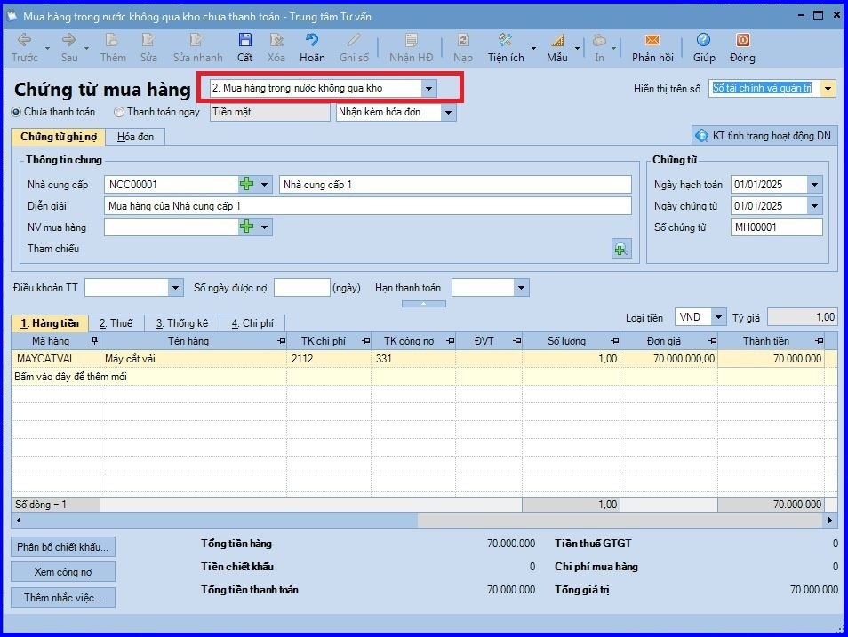
+ Kê khai thuế.
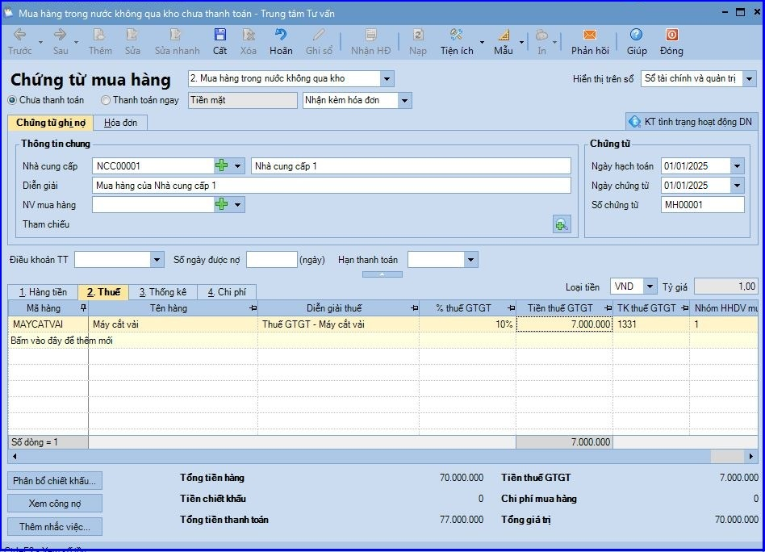
+ Sau đó ấn "Cất/ Ghi sổ chứng từ"
Bước 2: Ghi tăng TSCĐ vào sổ theo dõi TSCĐ
- Vào phân hệ "Tài sản cố định" => ấn "Ghi tăng".
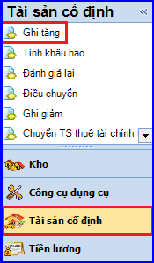
- Khai báo TSCĐ:
+ Tab 1. Thông tin chung: khai báo các thông tin về tài sản như tên, loại, đơn vị sử dụng, nước sản xuất…
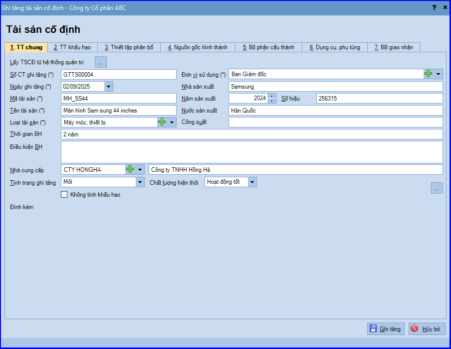
CHÚ Ý:
a. Trường hợp muốn lấy thông tin TSCĐ đã khai báo từ sổ này sang sổ khác, Kế toán có thể sử dụng chức năng "Lấy TSCĐ từ hệ thống quản trị" (hoặc ngược lại). Đồng thời không được đặt mã tài sản trùng nhau giữa các chi nhánh và hệ thống sổ.
b. Với các tài sản cũ đã hết khấu hao nhưng vẫn được sử dụng hoặc chưa khấu hao hết nhưng bị mất… nếu đơn vị vẫn muốn theo dõi trên sổ tài sản, thì khi ghi tăng sẽ chọn "Tình trạng ghi tăng" là "Cũ", đồng thời tích chọn vào thông tin "Không tính khấu hao".
c. Có thể đính kèm các tài liệu như Biên bản giao nhận tài sản, Hồ sơ kỹ thuật,…vào thông tin TSCĐ được ghi tăng để tiện tra cứu khi cần.
+ Tab 2. TT khấu hao: khai báo thông tin phục vụ cho việc quản lý và tính khấu hao TSCĐ như: Nguyên giá, Thời gian sử dụng…
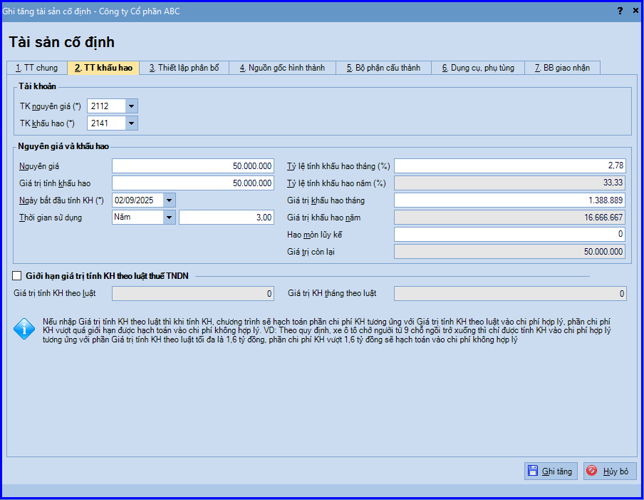
CHÚ Ý: Với những TSCĐ có quy định về mức tối đa khi tính khấu hao, nếu tích chọn thông tin "Giới hạn giá trị tính KH theo luật thuế TNDN" và nhập "Giá trị tính KH theo luật", thì khi thực hiện tính khấu hao TSCĐ hàng tháng, phần chênh lệch giữa Giá trị KH hàng tháng với Giá trị tính KH theo luật (chênh lệch > 0) sẽ được tính vào chi phí không hợp lý.
+ Tab 3. Thiết lập phân bổ: chọn đối tượng sẽ được phân bổ chi phí khi thực hiện tính khấu hao TSCĐ hàng tháng. => Phần mềm mặc định đối tượng phân bổ theo thông tin Đơn vị sử dụng bên tab "Thông tin chung", nhưng cho phép chọn lại thành: công trình, đối tượng tập hợp chi phí, đơn vị, đơn hàng, hợp đồng.
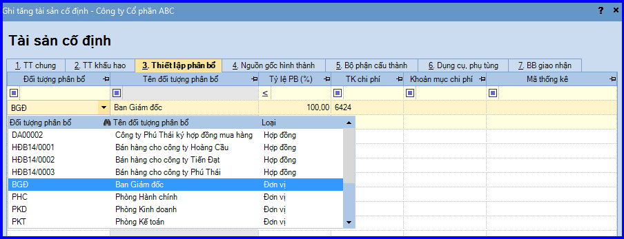
+ Tab 4. Nguồn gốc hình thành: chọn "Nguồn gốc hình thành". Đồng thời, tập hợp các chứng từ hình thành nên Nguyên giá TSCĐ (như: chứng từ mua TSCĐ, phiếu chi vận chuyển, tháo dỡ TSCĐ…)
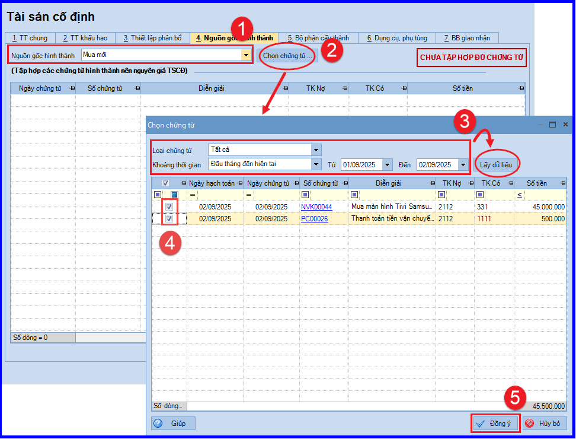
+ Tab 5. Bộ phận cấu thành
+ Tab 6. Dụng cụ, phụ tùng kèm theo: Trường hợp TSCĐ được cấu thành từ nhiều bộ phận hoặc có các phụ tùng kèm theo: Kế toán có thể khai báo thông tin trên tab "Bộ phận cấu thành" và "Dụng cụ, phụ tùng kèm theo" để quản lý.
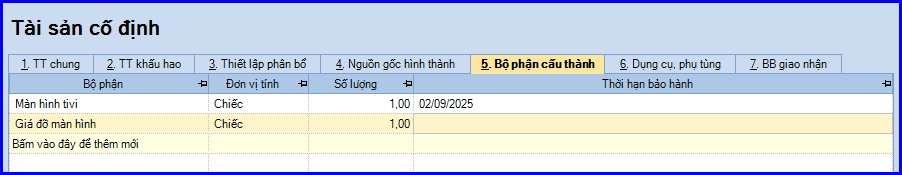
+ Tab 7. BB giao nhận: Khai báo các thông tin để phục vụ cho việc in "Biên bản giao nhận".
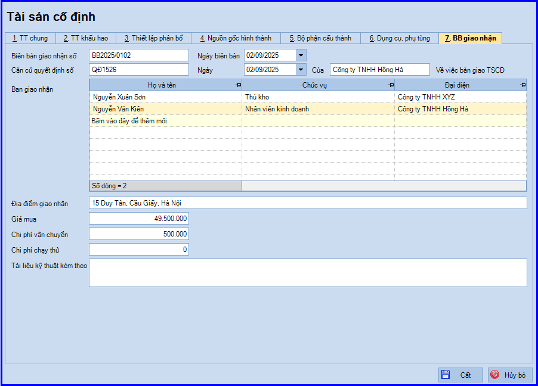
- Các bạn ấn "Ghi tăng".
CHÚ Ý:
Tại tab "Nguồn gốc hình thành": chọn nguồn gốc hình thành là "Mua mới". Đồng thời, chọn chứng từ là chứng từ mua TSCĐ đã lập ở bước 1.
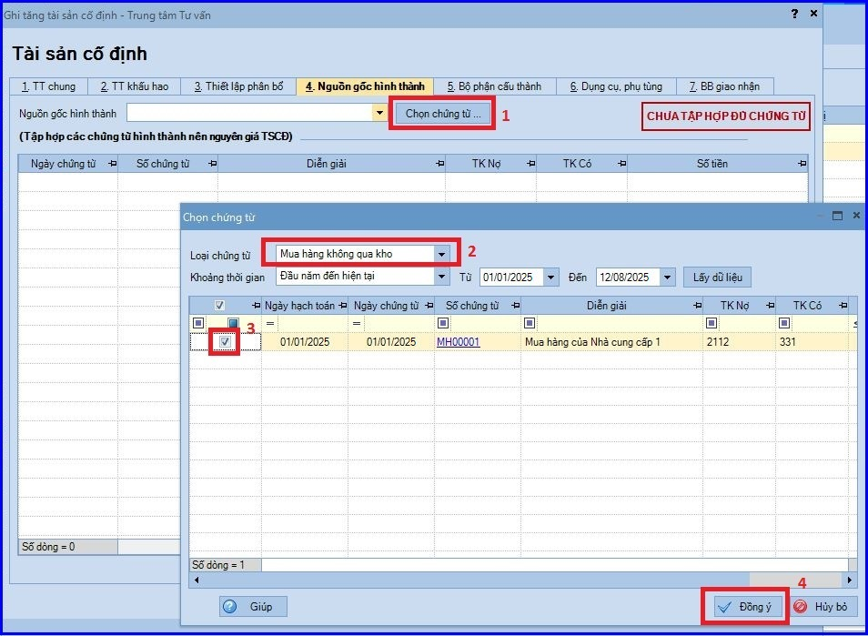
3. Lưu ý
Trường hợp mua tài sản cố định có phát sinh nhiều khoản chi phí, chẳng hạn như mua ô tô nhập khẩu, kế toán thực hiện như sau:
- Lập chứng từ mua hàng có loại là Mua hàng nhập khẩu không qua kho, hình thức thanh toán là Ủy nhiệm chi.
+ Tab Hàng tiền: Khai báo các thông tin về giá mua của xe ô tô
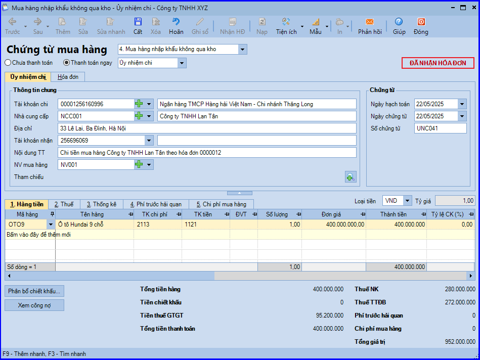
+ Tab Thuế: Khai báo thông tin thuế như thuế nhập khẩu, thuế tiêu thụ đặc biệt, thuế giá trị gia tăng hàng nhập khẩu.
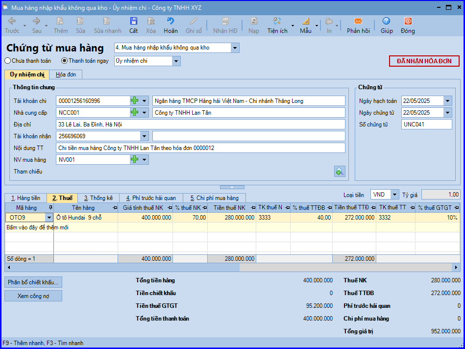
- Lập chứng từ ghi nhận các khoản chi phí phát sinh khác trong quá trình mua sắm TSCĐ. Ví dụ: Phí trước bạ, phí đăng kiểm…
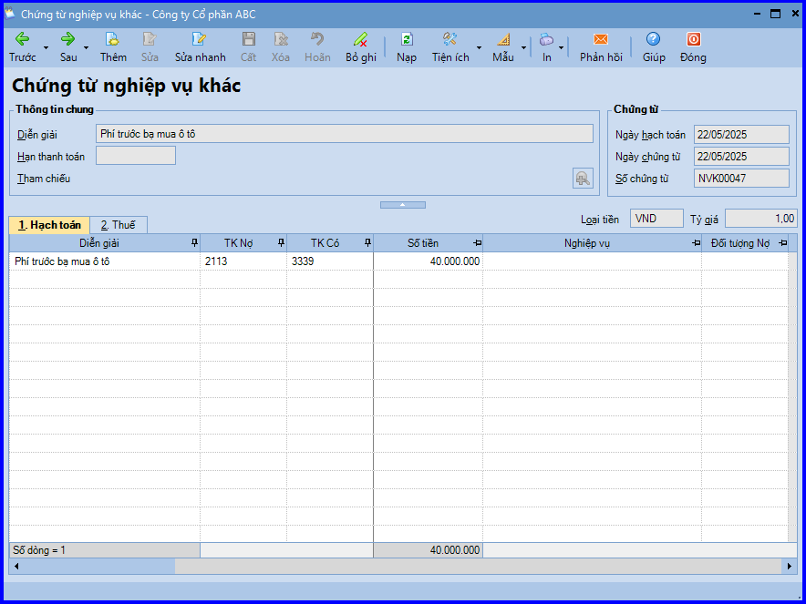
- Khi ghi tăng tài sản cố định cần lưu ý:
+ Nguyên giá TSCĐ = Giá mua thực tế + Các khoản thuế (không bao gồm các khoản thuế được hoàn lại) + Các khoản chi phí liên quan (tính đến thời điểm đưa TSCĐ vào trạng thái sẵn sàng sử dụng)
+ Tại tab Nguồn gốc hình thành, chọn các chứng từ bao gồm: chứng từ mua TSCĐ và các chứng từ hạch toán chi phí phát sinh liên quan.
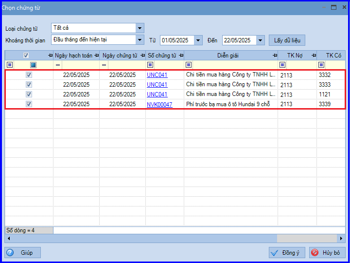
KẾ TOÁN DIỆU TÂM chúc các bạn làm tốt!
=============================
Nếu bạn muốn thành thạo các kỹ năng làm kế toán trên phần mềm Misa
Thì bạn có thể tham khảo "Khóa Học Thực Hành Kế Toán Trên Phần Mềm Misa" tại Công ty đào tạo Kế Toán Diệu Tâm
Trong khóa học này, bạn sẽ được dạy cách lên sổ sách, lập báo cáo tài chính trên phần mềm Misa
Chi tiết về chương trình đào tạo bạn xem tại đây nhé: Khóa học thực hành kế toán trên Misa
=============================
=============================
Nếu bạn muốn thành thạo các kỹ năng làm kế toán trên phần mềm Misa
Thì bạn có thể tham khảo "Khóa Học Thực Hành Kế Toán Trên Phần Mềm Misa" tại Công ty đào tạo Kế Toán Diệu Tâm
Trong khóa học này, bạn sẽ được dạy cách lên sổ sách, lập báo cáo tài chính trên phần mềm Misa
Chi tiết về chương trình đào tạo bạn xem tại đây nhé: Khóa học thực hành kế toán trên Misa
=============================